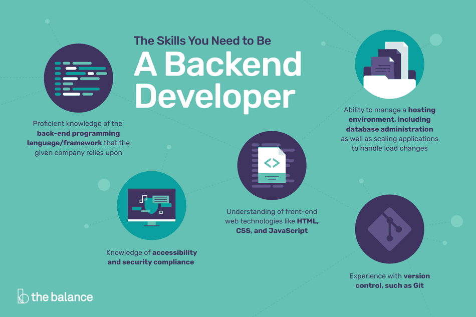

After the frontend of a website or web app is made, it must be deployed and maintained on a server. As websites evolve, the work done on both the server and the browser side evolves also, making the server do more.
Back-end developers
Back-end developers usually work on programming and scripting the server and all the files in it, making sure they connect to APIs correctly, and managing the security and functionality of the server. They make sure that the requests between the user and the server are handled correctly and securely, and as more traffic comes to a site, the server applications and architecture is scalable.
Skills needed
Backend devs need to learn server-side languages like PHP, .NET, Python, Ruby, node.js or Java and frameworks associated with them to build specific application for their servers. They also need to be able to server-managing software to manage the server, while also requiring an understanding of server hardware. To build good applications, having a good understanding of HTML, CSS and Javascript is also recommended. Similar, to the frontend developer, backend devs should also know how to work efficiently in teams, learn using a version control software like Git, and having a good workflow.
 Skills needed for backend development